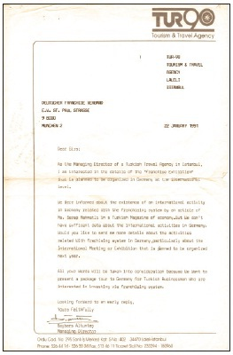
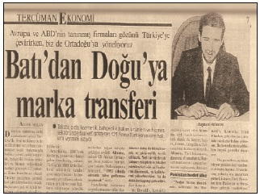
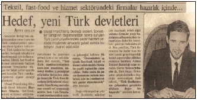
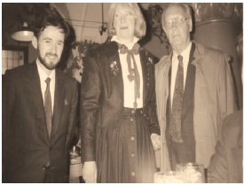
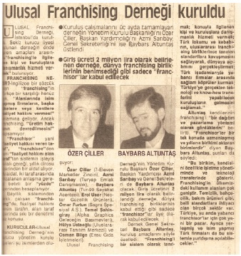
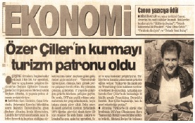

Franchising
‘’Kilis'te pekmezi olanın, sineği Bağdat’tan gelir.’’
5
Herkes pas geçti ! Ben faks geçtim !
McDonalds’ dünyada 5000 şubem var diyor ve bundan gurur duyuyor. Bizim kebabçımız, lokumcumuz, börekçimiz, köftecimiz ise yazar kasanın arkasına kocaman bir yazı asıyor ve diyor ki ‘Hiçbir Yerde Şubemiz Yoktur’. O da bundan gurur duyuyor! Ne yaman çelişki bu böyle dedim...
Boğaziçi Üniversitesi 2.erkek yurdunda kalıyorum. 10 kişilik odada cama yakın olan ranzanın alt bölümünde konaklıyorum. Üst tarafta da Şehremini Lisesi’nden kardeşimin sınıf arkadaşı Haydar.
Yıl 1991. Hafta sonları yoğun bir özel ders programım var.Pazar günleri öğlene kadar boşum çünkü aileler çocuklarına pazar günleri öğleden sonra ders aldırmaya başlıyorlar. Matematik, İngilizce ve Almanca dersleri veriyorum. Hafta içi de Laleli’de çocuk turları düzenleyen bir seyahat acentesinde çalışıyorum.
Pazar günleri kahvaltıdan sonra yurdun karşısındaki kütüphaneye gidip haftalık dergilere bakıyorum. Ekonomik Panorama diye bir dergiyi çektim rafların birinden. Sayfaları karıştırırken bir haber dikkatimi çekti:
“Franchising’e rağbet.”
İngilizce öğretmenliği bölümü 3.sınıf öğrencisiydim ve ‘franchising’ kelimesinin Türkçesi’ni bilmiyordum. Nedir bu kelimenin anlamı diyerek okudum 2 sayfalık haberi.
Kelimenin Türkçesi’ni öğrenmek için okurken bir anda şunu fark ettim: McDonald’s Türkiye’ye gelmiş ve Taksim Meydanındaki şubesinin önünde kuyruklar oluşuyor.
Hamburgerci dünyanın bir ucundan kalkıp Taksim Meydanına geliyor ama bizim Bursa İskender Kebapçısı Bursa’dan kalkıp Taksim Meydanı’na gelemiyor. Hafta sonları İskender yemek için sizin kalkıp Bursa’ya gitmeniz gerekiyor.
Laleli’de bir sürü köfteci, börekçi vardı. Türkiye çapında tanınan bu markaların sahipleri dükkânlarında yazar kasanın arkasına kocaman bir yazı asarlardı:
“Hiçbir yerde şubemiz yoktur.”
Açıkçası, okuduğum haberde McDonald’s gibi markaların franchising sistemiyle ne kadar çok şubeye ulaşırlarsa o kadar başarılı kabul edildikleri yazılıydı. McDonald’s dünyada 5000 şubem var diyerek gurur duyuyordu, bizim kebapçımız ise “hiçbir yerde şubem yok” diyerek gurur duyuyordu kendisinden.
McDonald’s’ı işleten de bir girişimci, kebapçıyı işleten de.
Öyleyse bu taban tabana zıt yaklaşımı nasıl izah edebiliriz diye düşünmeye başladım.
Okuduğum haberde franchising sisteminin dünyada örgütlendiği de yazılıydı ve sadece Alman Franchise Birliği’nin telefon ve faks numarası vardı. Bu numaraları not ettim.
Almanya’dan Misafirim Geliyor
Genellikle akşam üstleri okul çıkışı bizim okuldan 559C’ye binip Taksim Meydanı'nda iner, oradan da 83 numaralı Topkapı otobüsüne binip Aksaray’da iner, Laleli’ye yürürdüm. Saat 18.00 sularında acentede olurdum.
Ertesi akşam acentede daktilonun başına oturdum ve dün okulun kütüphanesinde not aldığım faks numarasına bir faks geçtim. Alman Franchise Birliği Başkanını, franchising sistemini tanıtmak amacıyla Türkiye’ye davet ettim.
Kendi kendime de defalarca sordum: Tirajı 20 bin olan bu dergiyi 20 bin kişi okudu ama niye sadece bir üniversite öğrencisi Alman Franchise Birliği Başkanı’nı Türkiye’ye davet etme gereği duydu?

Herkes pas geçti, ben faks geçtim.
Bu sorunun cevabını vermek çok önemli; girişimciyi diğer 19.999 kişiden ayıran özellik işte burada kendini belli ediyor. Bu sorunun bilimsel bir cevabı yok. Sadece şunu söyleyebilirim: Burnum kokuyu almıştı! Türkiye’de bu sisteme çok talep olacağını hissetmiştim. Hem yurtdışındaki markalar Türkiye’ye gelecek hem de Türkiye’deki yerli markalar artık dünya markası olacaklardı.
Ben bu faksı geçerken şunu hiçbir zaman aklımdan geçirmedim: “Sen bir üniversite öğrencisisin ve cebinde beş kuruş para yok.Sana ne franchising sisteminden.” Dedim ki “Bu işin bana maliyeti nedir? Ne kaybederim?”
Evet, ne kaybederdim ki. Sonuçta 5 kuruşluk bir kâğıda bir sayfa yazı yazıp, 20 kuruşluk bir faks gönderecektim. Projenin tüm maliyeti buydu benim için.
* * *
Açıkçası, Alman Franchise Birliği’nin faksımı dikkate alıp almayacağını, cevap verip vermeyeceğini düşünmedim bile. Düşündüğüm tek şey “burnum kokuyu alıyor ve kaybedeceğim bir şey yok” tespitiydi.
Bir hafta sonra Almanya’dan cevap geldi:
“Sayın Altuntaş, davetiniz için çok teşekkür ederiz. Masrafları bize ait olmak üzere, Türkiye’de bizim için bir basın toplantısı düzenler misiniz?”
“İşte şimdi sert kayaya çarptık” dedim. Adamlar benim öğrenci olduğumu bilmedikleri için – Mr Google iş başında değil o sıralar – beni kelli felli birisi sanıyorlar ve böyle bir talepte bulunuyorlardı. Hâlbuki ben, bırakın basın toplantısı düzenlemeyi, hayatımda bir gazeteci ile bile hiç karşılaşmamıştım. Basın bülteni nedir, gazeteci kimdir, basın toplantısı nasıl organize edilir; hiçbir fikrim yok. Hemen Almanlara cevap faksını geçtim: “Madem masraflar sizden, öyleyse memnuniyetle basın toplantısını düzenlerim.”
Çalıştığım seyahat acentesine özellikle yeni açılan otellerin katalogları geliyordu. En çok katalog da henüz yeni açılmış olan Çırağan Kempinski Oteli’nden geliyordu. Aradım. Telefonu açan kişiye “Otellerinde bir basın toplantısı düzenlemek istediğimi” söyledim. Telefondaki kişi ilgiliye aktaracağını söyledi ve telefon numaramı alarak telefonu kapadı. Ertesi günü akşam üstü, Çırağan’dan aradılar; “Baybars Bey, otelimizde şimdiye kadar hiç basın toplantısı düzenlenmedi. Çırağan Kempinski olarak Almanya’da franchising sistemini bilen bir şirketiz. Madem Alman Franchise Birliği Başkanı Türkiye’ye geliyor, müsaade ederseniz biz bu basın toplantısının sponsoru olmak isteriz.Hem de otelimizi ekonomi basınına tanıtma fırsatı buluruz.” Gerçekten çok sevinmiştim ama yine de, sponsor olmasalardı ne kadar ücret ödeyeceğimizi de öğrenmek istedim.Karşımdakinin söylediği rakam ayrıca beni sevindirdi. Otele para ödemedim ama Almanlara faturayı gönderdim. Ülkeme döviz kazandırmak zorundaydım, başka bir niyetim yoktu!
Hans Lang’a Taksiyle VIP Karşılama
22 Nisan 1991. Lufthansa’nın uçağı tam zamanında Yeşilköy Havalimanına indi. Havalimanı okuldan o kadar uzaktı ki otobüs-minibüs-dolmuş kombinasyonuyla nerdeyse 3 saatte varmıştım.
Girişimcinin 3 silahı
● Patent
● Marka Tescili
● Copyright
Bu 3 konu , girişimcinin pasaportudur. İş fikrinizin sahibi olmak, markanıza sahip olmak ve yazılı ve görsel eserlerinizin sahibi olmak en doğal hakkınız. Ancak , bu hakkınızı kullanmaz iseniz, ileride kendinizi riske atmış olursunuz.
35.Bu konular uzmanlık konusu ve bu konularda kitaplar dolusu eser var. Benim size tavsiyem hemen bir patent bürosu ve/veya marka patent vekili bularak bu işe önem vermeniz. Eğer önem vermez iseniz ne olur?: ‘Siz çekersiniz küreği, başkaları yer böreği’. Bu duruma düşmemek için Türk Patent Enstitüsü'nün web sitesini mutlaka ziyaret edin.www.turkpatent.gov.tr
36.Patent başvurusu için sadece basit bir form dolduracaksınız.
37.Marka tescili için, amblem ve logonuzu internetten bile yükleyebilirsiniz.
38.Web adresinizi internetten almayı unutmayın. Önerim: www.register.com
Bu 3 saati de eğer oturacak yer bulabilirsem ders çalışarak değerlendiriyordum.
Başkan elinde bagajıyla belirdi. Bakışlarından beni aradığını anladım. Elimde A4 kâğıda yazdığım “Hans Lang” yazısı, koltuğumda ders kitapları, altımda kot pantolon, üstümde t-shirt karşıladım Başkanı.
Başkan beni transfer elemanı zannetti; “Mr. Altuntaş nerede?” diye sordu.
Sesimi çıkartmadım. Taksiye binene kadar da sesimi çıkartmayayım dedim, şimdi bana inanmaz atlar uçağa geri döner diye çekindim. Takside “Mr. Altuntaş” olduğumu açıklayınca bayağı bozuldu. Başkanın bozulduğunu görünce içimden dedim ki “iyi ki minibüse bindirmemişim.” Bir öğrenci bütçesiyle benim için birisini taksiye bindirmek, bugün “firstclass” bilet hediye etmekten farksız olduğu için, karşılamamın kıymetini çok iyi anlayamadığını düşündüm.
Neyse, Laleli’de bir otele yerleştirdim kendisini ve ertesi sabah saat 09.00’da Çırağan Kempinski’deyiz. Basın kahvaltısı 30 kişilik hazırlanmış durumda ve iskemlelerin poşetleri bile yeni çıkarılıyor. Çırağan Kempinski’de ilk basın toplantısını düzenlemek de bana nasip oluyor.

Toplantıya marketten aldığım gazete ve dergilerin künyelerinden telefon açarak davet etmiştim tüm basın mensuplarını, basın bülteni falan yok ortada.İşte “burnum” ilk koku testinden bu salonda geçti. 30 kişilik salonda tam 75 medya mensubu vardı.Bazılarının şu espriyi yaptığını duydum; “Başbakan mı gelecek, nedir bu kalabalık?” Hem oteli hem de basın mensuplarının konuya ilgisini görünce, Alman Başkan’ın bir anda yüzünde güller açtı ve toplantı tam saat 10.00’da başladı. Ben toplantıda Hans Lang’ın tercümanlığını yapıyordum. Franchising Sistemi öylesine yeni bir sistemdi ki Türkiye için, pek çok basın mensubu ‘franchising’ kelimesini telaffuz edemiyor ve ‘fırenşig’ diyorlar, hatta bu şekilde yazıyorlardı.
O gün basın toplantısına katılan pek çok ekonomi muhabiri ile yıllarca süren dostluklar kurdum. Eğer bugün bu kadar çok üst düzey ekonomi medya yöneticisi tanıyorsam, kökeni işte bu toplantıya kadar gider. O günün muhabirleri zaman içinde yazı işleri müdürü, genel yayın yönetmeni, pr şirketi sahibi, yayınevi sahibi oldular. Toplantının en komik yanı ise yine gazetecilerle ilgiliydi; Hans Lang bir şeyler söyledikten sonra ben tercüme ediyordum, ancak birkaç gazeteci arkadaş ta benim tercüme hatalarımı düzeltmekten ayrı bir zevk alıyorlardı. Şehremini Lisesinde öğrendiğim devlet İngilizcesi’nin üzerine Boğaziçi Üniversitesi’nde ancak bu kadar oluyordu.

Franchising’in Tek Adresi Artık Benim
Kendi işinizi
kurarken
3 alternatiften
birini seçin
39.İş fikriniz oluştu, şu ana kadar sıraladığım tüm aşamaları da tamamladınız, iş tutacak gibi duruyor. Sıra şirket kurma aşamasına geldi. Aşağıdaki 3 alternatiften birini değerlendirin.
●Şahıs şirketi
●Limited şirket
●Anonim şirket
40.Ben, Deulcom’un franchise’ını alarak girişimcilik hayatına adım atan girişimcilerime Limited Şirket kurmalarını öneriyorum. Şahıs şirketinin kurumsallaşma açısından sorunları var.Anonim şirketin de yeni kurulan bir iş için gereksiz pek çok prosedürü var. Limited şirketi en az 2 kişiyle ve toplamda en fazla 3000 TL maliyetle kurup, sizi ve girişiminizi yıllarca taşıyabilecek bir yapıya sahip.
Temmuz 2012'den itibaren tüm bu işlemlerde yeni kanun hükümlerinin geçerli olacağını da bilmenizi isterim.
Fakat gazeteciler bu konuyu o kadar sevdiler ki o hafta tüm ekonomi basını bu toplantıdan bahsetti. Şu iki haber ise beni gerçekten keyiflendirdi:
Dünya Gazetesi : “Baybars Altuntaş’a göre Franchising” haberinde sistemin kelime manasının isim babası olarak yer alıyordum.
Tercüman Gazetesi: “Baybars Altuntaş Önderliğinde Batıdan Doğuya Marka Transferi” haberi de nerdeyse tam sayfa yer almıştı gazetede.
Dikkatimi çeken şey şu oldu: Hiç kimse bana ne iş yaptığımı, neden Alman Franchise Birliği Başkanı’nı Türkiye’ye davet ettiğimi, benim kim olduğumu sorgulamıyordu. Konu çok güzel bir konuydu ve kim olduğum kimsenin umurunda değildi.
İş fikrim çok doğruydu ve doğru iş fikrinin ne kadar çok kapıyı ne kadar kısa zamanda açtığına şahit oluyordum. Kısa zamanda franchising sisteminin Türkiye’deki tek adresi oluvermiştim. Sevgili burnum beni yanıltmamıştı. Okuldaki sınavlara da benim yerime sevgili burnum girse çok iyi olacaktı ama maalesef böyle bir imkân yoktu.
Evet, iş dünyasından ailemde bir tek üye bile yoktu. Hatta 21 yaşında bir öğrenci olarak iş dünyasından da hiç kimseyi tanımıyordum ama iş dünyası artık beni basından tanıyordu.
6
21 yaşında bir öğrenciyim. Alman Başkan: "Wiesbaden’a gelin, Türkiye’deki franchising sistemini Avrupalı yatırımcılara anlatın" dedi. "Ben mi anlatacağım?" dedim...
Wiesbaden’da Umberto Eco’nun meşhur ‘The Name of the Rose’ filminin çekildiği şatodayız.Avrupa Franchising Sisteminin tüm önde gelen oyuncularıyla beraber özel bir davette yemek yiyoruz. Gecenin yıldızı ise tahmin edeceğiniz gibi ‘Türkiye’. Yani ben.
Alman Franchise Birliği Başkanı halinden memnun bir şekilde ülkesine döndü. Ben de derslerimin başına geçtim yine. Fakat gazetelerde çıkan haberlerden sonra Türkiye’nin dört bir yanından iş adamları beni aramaya başladı.Çalıştığım seyahat acentesi hafta sonları çocuk turları düzenleyen bir acente. Her telefon çaldığında hangi veli kayıt için arıyor diye telefonu açıp “Mağazamı McDonald’s yapmak için Baybars Beyle görüşecektim” diyen girişimcilerin sayısı arttıkça, anladım ki bu gidişle beni kapının önüne koyacaklar.
Arayan iş adamlarının sayısı 200’ü bulunca Hans Lang’a bir faks daha geçtim. “Siz döndünüz Almanya’ya, ben kaldım bu girişimcilerle baş başa. Ne yapacağım ben şimdi?”
Gelen cevap şuydu: “Türkiye’deki potansiyeli anlatmak üzere 24 Mayıs’ta Wiesbaden’daki Avrupa Franchise Fuarı’nda bir konuşma yapmanızı rica ediyoruz.”
Cevap yazmakla vakit kaybetmek istemedim ve telefona sarıldım:
“Mr. Lang, davetiniz için çok teşekkür ederim. Gelir konuşurum da. Ancak Türkiye’de size söylemiştim, ben yurtta kalan bir öğrenciyim. Bu seyahatin konaklama ve ulaşım masrafları ne olacak?’’
“Baybars, hiç sorun değil. Sen, 2 gazeteci arkadaşını da beraberinde getir. Hepinizin uçak, konaklama ve transferlerini Alman Franchise Birliği karşılayacak.”
Güzel olmuştu. Kıbrıs’tan sonra ilk kez gerçek anlamda yurtdışına çıkacaktım. Bu franchising işi gittikçe hoşuma gitmeye başlamıştı.
Açıkçası, tüm bunlar olurken, bir gün kendi bulduğum Deulcom markasının Türkiye’nin en önde gelen 100 franchising markasından biri olacağı aklımın ucundan bile geçmiyordu.
Almanya’dan davet mektuplarımız geldi, vizelerimiz çıktı ve Milliyet’ten ve Ekonomik Panorama’dan birer muhabir ile Frankfurt’a uçtuk. Frankfurt havalimanından Wiesbaden’daki, Holiday Inn oteline götürdüler.
Hayatımda ilk kez yurtdışına çıkıyorum ve soluğu uluslararası bir toplantıda alıyorum. Ne olacak bakalım bu hikâyenin sonu diye de düşünüyorum.
Kaldığımız otel öyle bir otel ki, franchising sisteminin dünyadaki en önemli oyuncuları burada kalıyor. BP Dünya Marka Başkanı yan odada, McDonald’s Avrupa Direktörü karşı odada; hepsi kapı komşum. Bir de kravat takmışım, asansörde herkese ‘bonjour’ deyip duruyorum, herkes beni önemli biri sanıyor.Bilmiyorlar ki 3 gün sonra İstanbul’da olmam lazım, yoksa final sınavlarına giremeyeceğim.
Bu arada, Cağaloğlu’nda kendime kartvizit bastırmışım:
Baybars Altuntaş
İstanbul Franchising Büro

Wiesbaden’da
Ben mobil büroyum, adres falan yok. Sadece telefon numarası var kartvizitin üzerinde, o da rahmeti anneannemin Fındıkzade’de oturduğu evinin telefonu. 2.Erkek yurdunun telefonlarını yazarsam bana ulaşamazlar diyerek anneannemin telefonunu yazmıştım ama anneannemin “Seni yabancı birileri aradı, ne dediklerini anlamadım, Türkçe konuşmuyorlardı, ben de telefonu kapadım. ’’ diye kötü bir sekreterlik hizmeti sunacağı aklıma gelmemişti.
Hans Lang, kahvaltıda beni franchisingin Türkiye adresi diye tanıştırıyordu. Ben de kartvizitimi takdim ediyordum. Hans Lang yatırımcıların Türkiye’ye ilgisini hemen fark etti: “İyi ki geldin” dediğini hatırlıyorum. Tanıştığım Avrupalı yatırımcılara Süleyman Demirel’in o sıralardaki söyleminden kopya çekip Türkiye’deki potansiyeli anlatıyordum:
“Sovyetler Birliği dağıldı ve yepyeni Türk Cumhuriyetleri ortaya çıktı. Türkiye, bu yeni ve genç cumhuriyetlerin abisi konumunda. 400 milyon nüfuslu bir Türk coğrafyası. Türkiye üzerinden tüm bu coğrafyaya hitap edebilirsiniz” diyordum.Hepsinin ağzının suyu akıyordu. Benden Türkiye’de kendileri için seminer, workshop, konferans düzenlememi talep etmeye başladılar.
Ayak Üzeri Franchising Derneği Kuruyorum.
Umberto Eco’nun meşhur “The Name of the Rose” filminin çekildiği şatodayız. Avrupa Franchising Sisteminin tüm önde gelen oyuncularıyla beraber özel bir davette yemek yiyoruz. Gecenin yıldızı ise tahmin edeceğiniz gibi “Türkiye”; yani ben. Orada anladım ki “Kilis’te pekmezi olanın, sineği Bağdat’tan geliyor...” İş fikriniz doğruysa, yatırımcı sizin peşinizi bırakmıyor.
Kartvizitlerim o gece kısa zamanda tükendi.
Milliyet’ten gelen muhabir arkadaş dedi ki:
“Baybars Bey, Türkiye’ye çok yoğun talep var buradan. Bundan sonraki aşama ne olacak, bundan sonra ne yapacaksınız?”
“Bundan sonraki adım Türkiye’de Franchising Derneğini kurmak. Hedef, Avrupa Franchise Federasyonu’na tam üyelik!”
“Bu çok önemli bir gelişme Baybars Bey. Peki, kurucuları kimler?”
“Yani ben tek başıma kuruyorum. Bir Türk dünyaya bedel değil mi?”
“Hukuken değil. Dernek kurmak için en az 7 Türk gerekiyor.”
“Öyleyse işte size liste” dedim Franchising Derneği’nin kurucular listesini verdim.
Muhabir, Türkiye’de franchising derneğinin kuruluşunu çok önemsedi ve bununla ilgili bir haberi Milliyet’in merkezine Wiesbaden’dan geçti.
Ertesi günü Milliyet ekonomi sayfasında çeyrek sayfa bir haber vardı:
“Baybars Altuntaş’ın önderliğinde Türkiye’de Franchising Derneği kuruluyor.”
Haberde bir de kurucular listesi yer alıyordu. Boğaziçi Üniversitesi 2.Erkek Yurdu’ndaki tüm oda arkadaşlarım Franchising Derneği’nin kurucuları olarak Milliyet Ekonomi sayfasında yerlerini almışlardı.
* * *
Haber ekonomi dünyasında resmen bomba etkisi yapmıştı.Türkiye’ye döndüğümde acentedeki arkadaşım 45 kişilik bir isim listesi verdi bana.
“Dernek kuruyormuşsun. Bu arayanlar da kurucu üye olmak istiyorlar...”
Tam 45 adet iş adamı beni aramış ve isimlerini bırakarak kurucu üye olmak istediklerini bildirmişlerdi.
“İşte şimdi oltaya takıldılar” dedim içimden.
Franchising Derneği Genel Sekreteriyim
Bu sefer Çırağan Sarayı ücret talep etti. 45 iş adamı da düzenlediğim toplantıya geldi, eksiksiz. Almanya’da yaptığım ikili temaslar ve dernek kuruluşu hakkında bilgilendirme toplantısıydı düzenlediğim toplantı. Hayatımda ilk kez bu kadar çok iş adamını bir arada görecektim. Boynumda kravatım, elimde alfabetik listem gelenleri karşılıyordum.
Organizasyonda tek şey hariç, hiçbir sorun yoktu. Toplantı odasına her gelen mutlaka salondan en az iki kişiyi tanıyor ve birbirleriyle hemen sohbete başlıyordu. Toplantıyı düzenleyen bendim, ancak gelenlerin hiçbirini tanımıyordum.
Kare masa düzeninde herkes yerine oturdu ve toplantıyı başlattım. Toplantıyı başlatır başlatmaz “önce herkes kendisini tanıtırsa iyi olur” dedim, kimin kim olduğunu böylece öğrenecektim. Elimdeki listede her ismin yanına kısa notlar aldım.
Tam karşı masada oturan, ellili yaşlarda gösteren iş adamımız dedi ki:
“Hocanım (eşinden bahsediyor) üniversitedeki derslerinde franchising sistemine çok önem verir. Biz de Amerika’dayken bu sistemi iyi etüt etmiştik. Derneğin kuruluşunda her türlü desteğe hazırım.” Bu iş adamımızı sanırım herkes tanıyordu ki, adını söyleme gereği hissetmedi.
O günkü toplantıdan şöyle bir karar çıktı: 45 kişiyle bu derneğin kurulmasının mümkün olmadığı belirtildi. Dernek kurmak için en az 7 kişinin gerektiği belirtildi. Bugünkü toplantıya katılanlardan Baybars Bey ile beraber 7 kişinin katılımıyla kurucu komite derneğin tüzüğünü hazırlasın, kursun, biz de sonra üye olalım dediler.

Ben dâhil toplam 8 kurucu üye, bir hafta sonra Şişli’de Şetat Ticaret Merkez'inde TURYAP Genel Müdürlüğü’nde ilk toplantımızı yaptık. Dernek 21 Eylül 1991 tarihinde kuruldu. O gün toplantıda adını söylemeyen iş adamımız, Franchising Derneği’nin ilk Başkanı oldu. TURYAP’ların kurucusu Azmi Sarıbay da Başkan Yardımcısı oldu.Ben de Yönetim Kurulu Üyesi ve Genel Sekreter oldum. Azmi Beyin Tarlabaşı Bulvarı’nda kullanmadığı 15 metrekarelik küçük ofisini de derneğin Genel Sekreterlik Makamı yaptılar.Artık özel derslerin, seyahat acentesinin yanı sıra bir de Franchising Derneği Genel Sekreterlik görevim olmuştu. Herhalde dünyadaki franchising dernekleri içinde minibüsle dernek merkezine gelip giden ve dernekten çıkıp okuldaki derslere yetişmeye çalışan tek Franchising Derneği Yönetim Kurulu Üyesi bendim.
Hoca Hanım’ın Önlenemez Yükselişi
15 günde bir, benim o küçük odamda yönetim kurulu toplantısı yapıyorduk. Bir toplantıda Başkan dedi ki:
“Sizlere güzel bir haberim var. Süleyman Demirel, Hoca Hanıma milletvekilliği teklif etti. Hoca Hanım düşünüyor teklifi.’’
‘’Başkan ne güzel haber bu böyle. Tebrikler. Hayırlısı olur inşallah.’
Şirketinizi
hızla kurmanın
püf noktaları
Pek çok girişimci, hayatlarında ilk kez şirket kuruyor oldukları için bu işi gözlerinde büyütüyor.Hâlbuki şirket kurmak 1 hafta süren basit bir evrak takip işi.
41.Size önerim, şirket kurma işini bir muhasebeci kanalıyla yürütmeniz. Onlar prosedürleri hızla halledip şirketinizi kuruyorlar. Sizin yapmanız gereken, gerekli yerleri imzalamanız.
42.Şirketin hangi konuda faaliyet göstereceği hakkında muhasebecinize özet verin – ki şirket ana sözleşmesini ona göre hazırlasın.
43.Şirketin adını internetten kontrol edin. Bu isimde başka bir şirket var mı yok mu ?
44.Şirket kuruluş evraklarını, hangi şehirde şirket kuruyorsanız o şehrin ticaret odasının web sitesini inceleyerek öğrenebilirsiniz. Örneğin, İstanbul’da şirketinizi kuracaksanız İstanbul Ticaret Odası’nın web sitesini inceleyiniz.www.ito.org
45.Şirket kuruluş evrakları içinde kira kontratı önemli bir evraktır. Maliye’den gelip size bir tutanak bırakacaklar. Bu tutanak şirketin vergi numarasını almanız için çok önemli. O gün mutlaka ofiste olun.
46.Şirketi kuracak olan muhasebeciniz, muhasebenizi de tutarsa, şirket kuruluşu için ekstra bir ücret talep etmez genellikle.Ancak, muhasebeyi tutmayacaksa, şirket kuruluş işlemleri için danışmanlık bedeli olarak 250 TL ile 1000 TL arası bir ücret ödemeniz gerekebilir muhasebeciye.
İşte bu konuşmanın üzerinden yanılmıyorsam 3 ay geçti ve Hocanım İstanbul’dan Milletvekili oldu. Ve bakanlar kurulu listesi açıklandı. O da ne? Hocanım yeni kurulan hükümette Ekonomi Bakanı. Bitmedi. Yaklaşık bir yıl sonra Cumhurbaşkanı Turgut Özal vefat etti, Süleyman Demirel Cumhurbaşkanı oldu ve Hoca’nım Türkiye’nin ilk kadın Başbakanı oldu.
Evet. Milliyet Gazetesinde çıkan haber üzerine arayarak dernek kuruluşuna katkı koymak isteyen iş adamlarımızdan biri, o günkü toplantıda adını söylemeyen ve daha sonra derneğin Başkanı seçilen Özer Çiller’di.
* * *
Dernekteki çalışmalarda en unutamadığım anım, Boğaziçi Üniversitesi’nde saatli binada İşletme Kulübü’nün davetlisi olarak verdiğimiz konferans ve paneldi. Dersten çıkıp, dinleyicilerin arasından sıyrılarak son anda panel masasında yerimi almıştım. Okuduğum okulda, her gün gelip konuşmacıları dinlediğim salonda şimdi de ben konuşmacıydım. Çok hoşuma gitmişti. Tansu Çiller Büyükçekmece’den 7.bölgeden aday olmuştu. İstanbul’da kadın nüfusunun en yoğun olduğu bölgeydi Büyükçekmece. O sıralarda Büyükçekmece Askeri Kampı vardı, bitişiğinde de Sinbad Otelleri. Sinbad Otelleri de seçim çalışmalarının merkeziydi. Bir gün derneğin yönetim kurulu toplantısından sonra Özer Bey bana dedi ki:
“Baybars, Tansu Hanım’ın seçim çalışmaları için bir ekip kuruyorum. Sen de katıl ekibe. Bu akşam Nişantaşı’ndaki ofisimde buluşacağız. Sen de gel istersen.”
Eskiden, Nişantaşı’nda Büyük Ankara Pazarının – daha sonra 7 / 11 Mağazası oldu – tam karşısında Özer Bey’in ofisi vardı. O akşam Tansu Hanım’ın okuldan 2 öğrencisi, ben ve Özer Bey ilk seçim yürütme kurulu toplantısını yaptık. Özer Bey beni, ajitasyon ve propaganda sorumlusu yaptı. Ertesi günü Levent’te reklam ajansında buluştuk. İşte orada Tansu Hanım’ın Doğru Yol Partisi’nden aday olduğunu öğrendim. Daha doğrusu Süleyman Demirel’in partisinin adının Doğru Yol Partisi olduğunu öğrenmiş oldum. Siyasetle ne kadar ilgilendiğimi buradan anlayabilirsiniz.
Özer Bey’in şirketinin merkezi Okmeydanı’ndaydı. Şirketin merkezi büyüktü ama Özer Bey’in 10 metrekarelik küçücük bir ofisi vardı o koca şirkette. Özer Bey, çok sonuç odaklı ve gereksiz hiçbir şeyi sevmeyen bir insandı. Odasında aynı anda sadece bir kişi daha misafir edebilecek durumdaydı. Çok hoşuma gitmişti bu. Daha sonra kendi şirketimi kurduğumda ben de böyle küçücük bir Genel Müdür Ofisi yapmıştım kendime.
Özer Bey benim için gerçek bir rol modeliydi. Henüz öğrenci olmama rağmen, her geldiğimde beni kapıya kadar uğurlardı. Dikkat ettim, herkese karşı böyle mütevazı ve kibardı. Ofis boy, genel müdür, zengin, fakir fark etmiyordu onun için. Bu öylesine bir davranış şekliydi ki, direkt gönülleri fethediyordu. Hem derneğin yönetim kurullarında, hem de ajans’taki seçim çalışmalarında gördüm ki, hiçkimseye “hayır”demiyordu. Hep“evet” der, her şeye olumlu yaklaşırdı.
Seçim sloganı ile ilgili bir çalışmada, Özer Bey’in seçim sloganını kimse beğenmemişti. Küçük bir oylama yaptık ve başka bir slogana karar verdik. Bir kaç saat sonra matbaadan afişler geldiğinde gördüm ki, Özer Bey’in seçim sloganı afişlere basılmış. Özer Bey, insanları kırmamak için her şeye “evet,haklısınız” diyordu ama sonuçta kendi bildiğini okuyordu. Bu da bana güzel bir ders olmuştu. Eğer fikrinizden eminseniz, her ne kadar herkes hayır dese de, risk alıp son kararı siz vereceksiniz.
Özer Bey beni Atatürk Kültür Merkezi’nin önünden Ford arabasıyla alır, Büyükçekmece’ye giderdik. Büyükçekmece’ye gittiğimizde bizi İlçe Başkanı ve partililer karşılardı. Yüzlerce kişi vardı ilk toplantıda. Herkes Özer Bey ve etrafındakilere çok önem veriyorlar, karşımızda hemen önlerini ilikliyorlardı. Her şey bir film gibiydi. Özer Bey “RayBan” gözlükleriyle resmen Hollywood yıldızları gibiydi. Otobüsten inişimiz, karşılanışımız, uğurlanışımız; öylesine eğlenceli geçiyordu çalışmalar. Özer Bey kendisini çok kısa zamanda herkese sevdirmesini bilen ve benim için gerçekten çok farklı bir insandı. Hâlâ herkesi kapıya kadar geçirmemi, Özer Bey’in üzerimde bıraktığı etkiye borçluyum diyebilirim. Bu çalışmalardan şunu öğrendim: Siyasete atılmaya hiç gerek yok! Hatta siyasetten uzak durmalıdır girişimciler. Siyasetçiye yakın durmalarının ise hiçbir zararı yoktur. Eğer gerçekten siyasete atılmaya niyetiniz varsa, mutlaka ve mutlaka işin en başındaki insanla yola çıkın. Yoksa 40 yılınızı verir, İlçe Başkanı olursunuz, ertesi günü hiç tanımadığınız üniversitede öğrenci olan Baybars gelir karşınıza, önünüzü iliklemek zorunda kalırsınız.
Tansu Çiller’in Ekonomi Bakanı olması derneğin de ilk genel kurul zamanına denk geldi. Özer Bey, artık dernekte aktif görev alamayacağını belirtti. Diğer yönetim kurulu üyeleri de isteksiz davranınca yeni bir yönetim kurulu tespit edildi. Ben de bunu fırsat bilip,“derslerime yoğunlaşmam gerekiyor” diyerek yeni bir Genel Sekreter bulmalarını önerdim. Derneğin pek çok üyesi benim öğrenci olduğumu bilmiyorlardı. Derneğe sadece Franchising Sektörünün en üst düzey yöneticilerini – Genel Müdür veya Yönetim kurulu Başkanı – üye kabul ettiğimiz için ben de genç bir CEO olarak algılanıyordum. Çok kısa zamanda hem Türkiye’nin önde gelen iş adamlarıyla tanışma ve dostluk kurma fırsatı yakaladım, hem de ekonomi basının gözdesi oldum. Genel Yayın Yönetmenleri arayıp Özer Çiller’den ve Tansu Çiller’den randevu istiyorlardı benden. Sanıyorlardı ki, yediğimiz içtiğimiz ayrı gitmiyor.

Hâlbuki hiç de öyle bir durum yoktu. Evet, Özer Bey’le hemen her gün görüşüyorduk ancak Tansu Çiller’i ben sadece okulda canlı olarak görmüştüm. Onun dışında kendisiyle tanışma fırsatı bile bulamamıştım. Bir gün gazeteyi açtım. Manşetten şöyle bir haber vardı ekonomi sayfasında: “Özer Çiller’in Kurmayı Turizm Patronu Oldu.” Haber külliyen yanlıştı, ancak okulda bende bir hava, bir hava... Anlatamam. Özer Bey de haberi tekzip etmeyince bütün ekonomi basını beni Özer Çiller’in gerçekten kurmayı sanmaya başladı. Hâlbuki Tansu Hanım milletvekili olduğu günden sonra bir daha Özer Beyi görme fırsatım olmamıştı. Nitekim 1992 yılından günümüze hiç görüşemedik.
1991 yılında bir üniversite öğrencisinin kurduğu Franchising Derneği (UFRAD), bugün tüm sektörün tek sivil toplum kuruluşu. Dünya Franchise Konseyi’nde Türkiye’yi UFRAD temsil ediyor. Türkiye’nin hemen hemen tüm franchising markalarının en üst düzey yetkilileri derneğin tam üyesi. Avrupa Franchise Federasyonu’nun da en aktif üyelerinden. 25 kuruşluk bir faksla kurulan derneğin, bugün, dergilerden, yayınlardan, fuarlardan binlerce dolar geliri var. Beni en sevindiren yanı ise 1991 yılında kurduğum derneğin yüzde 80’i yabancı marka temsilcilerinden oluşuyordu. Şimdi ise yerli franchising markalarının oranı yüzde 50’lerde. Yabancı markalar Türkiye’ye geldi, bizimkiler de markalaşmayı hızla öğrendiler...
İş yerinizi bulurken işte size ipuçları
47.Öncelikle şunu netleştirmeniz gerekiyor. Yapacağınız işte, müşteri mi sizin ofisinize gelecek? Yoksa siz mi müşteriye gideceksiniz? Bu soruların cevabı boşu boşuna gereksiz maliyetli yerler tutmanızı engeller.
48.Eğer müşteri ofisinize gelecekse 3 noktaya dikkat etmeniz gerekiyor.
●Tarifi kolay olacak
●Otopark sorunu olmayacak
●Ulaşımı kolay olacak
●Dış cephede tabela asacak yeri olacak
49.Eğer siz müşteriye gidecekseniz, bu durumda ille de görünür ve merkezi bir yerde ofis açmanıza gerek yok. Şehrin en makul kiralık yerlerinde ofis açabilirsiniz.
Kira Kontratınızı yaparken, aman dikkat !
Kira kontratınızı yaparken şimdi söyleyeceklerimi sakın unutmayın. Kişisel tecrübemle sabit olan bu detaylar çok çok önemlidir.
50.Mutlaka özel şartlara şu maddeyi ekleyin: ‘İş bu kira kontratı, kiracı tarafından bir ay evvelinden bildirilmek kaydıyla tek taraflı feshedilebilir. Bu durumda kiracı, mecuru tahliye ettiği tarihten kira dönemi sonuna kadar olan kiralardan sorumlu olmaz.’
51.Mümkünse, kiralayacağınız yerin durumuna göre en az 1 ay ücretsiz tadilat müddeti isteyin.
52.Tabelanızın nereye asılacağını mutlaka kira kontratında belirleyin.
53.Haftanın kaç günü ve hangi saatler arasında binanın açık olacağını mutlaka kontratta belirleyin.
54.Kiralayacağınız yerde yapacağınız işle ilgili belediye, vs. ruhsatı almak durumundaysanız; bu ruhsat için gerekli tüm belgeleri mal sahibinin size tedarik edeceğini de kontratta belirleyin.
55.Depozito kanunen 2 kirayı geçemez. Mümkünse 2 kira tutarında bir teminat senedi veya çeki vererek, veya bir banka mektubu vererek; naktinizi bağlamayın. Bunu da kira kontratına yazdırın.